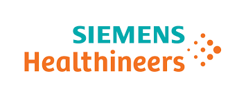
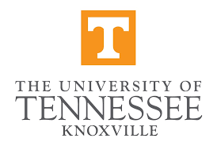
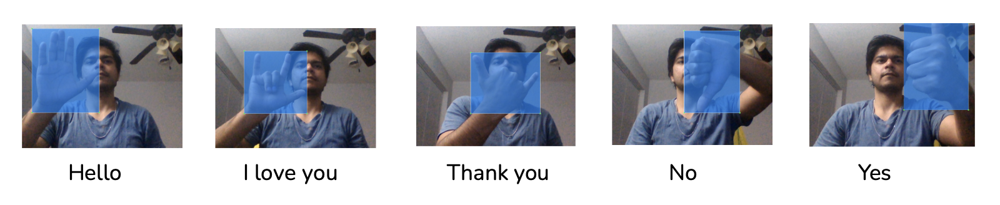
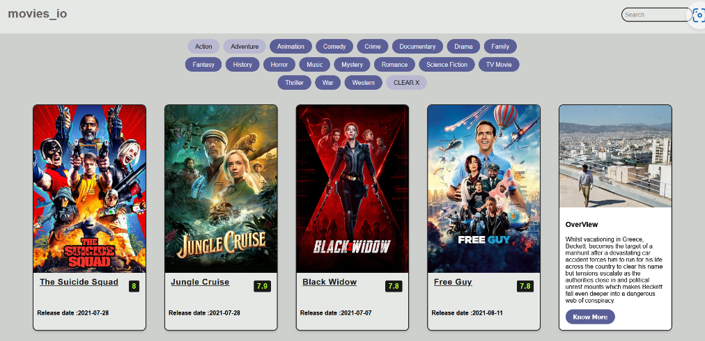

I am a Software Engineer with 2+ years at Siemens Healthineers building AI/LLM systems, automation frameworks, and CI/CD pipelines. Specialized in C++, Python, and C# with hands-on experience in RAG pipelines, LLM fine-tuning (Mistral 7B), and distributed systems. M.S. Computer Science — Machine Learning, University of Tennessee.




Movie browsing web app using ReactJS and the TMDB API — fetches real-time data on latest and upcoming movies with ratings and reviews.